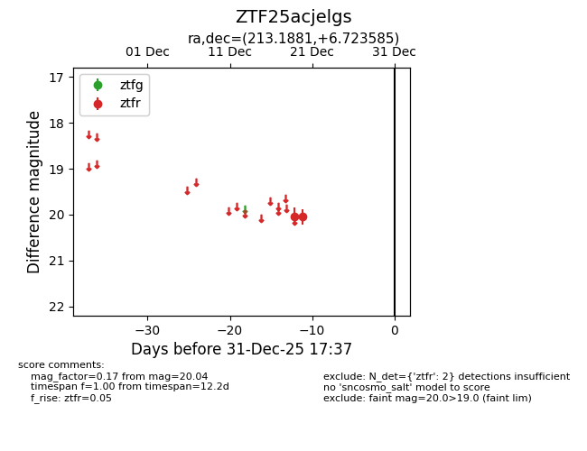
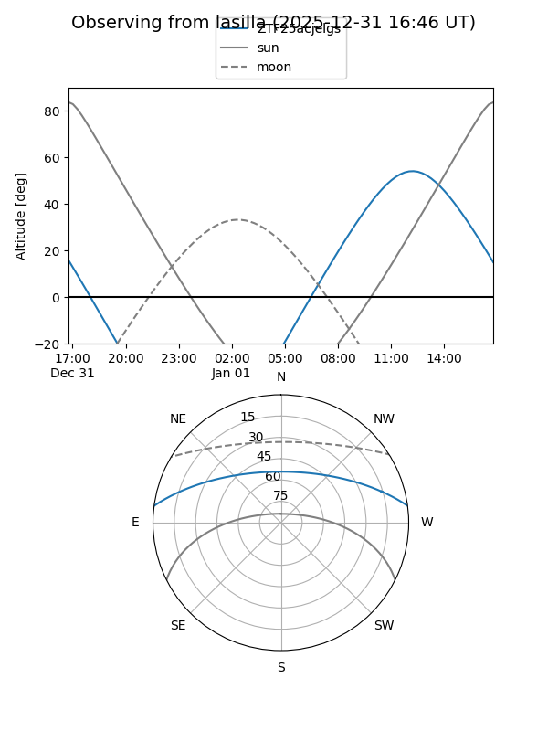
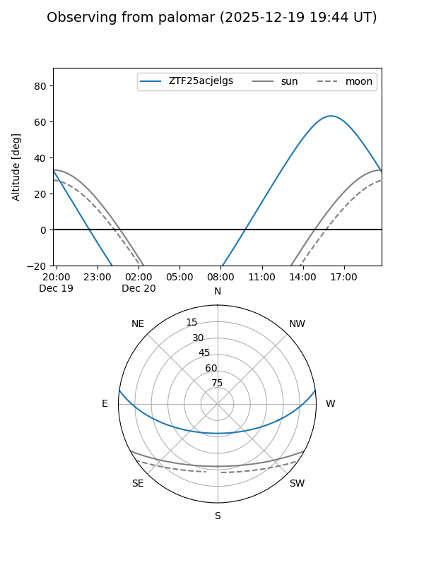

ZTF25acjelgs
Target ZTF25acjelgs at 2025-12-31 17:00
Aliases and brokers:
FINK:
Lasair:
ALeRCE:
alt names
ZTF25acjelgs (ztf,fink_ztf)
Coordinates:
equatorial (ra, dec) = 213.1881,+6.72359
equatorial (HMS+DMS) = 14:12:45.15,+06:43:24.91
galactic (l, b) = (350.0466,+61.90917)
Flags:
Photometry:
last ztfr=20.04
2 ztfr detections
Lightcurve

Visibility


Additional plots